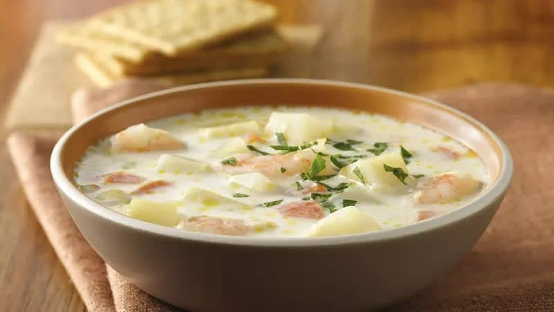

Home
Shrimp & Potato Soup

A creamy (yet, healthy!) bowl of seafood potato soup.
This delicious soup uses leftover shrimp tails to make a beautiful and savory seafood stock. You can use the tails to make the stock separately or (if you're feeling lazy) wrap them in a cheesecloth and simmer them in the soup as it cooks.
It only takes about 15 minutes to extract the flavor and once done, all you have to do is stir in some low-fat greek yogurt and shredded monterey jack cheese for a healthier bowl of potato soup that's perfect for the winter season!
Ingredients
- 1 Cheesecloth (optional)
- 16 oz Shrimp
- 1 lb Red Potatoes
- 1 Green Onion
- 1/2 Yellow Onion
- 3 Garlic Cloves
- 2 Carrots
- 2 Celery Stalks
- 2 32oz Redced-Sodium Chicken Stock
- 1 cup Greek Yogurt
- 1 Tbsp Extra-Virgin Olive Oil
- 1 Tbsp Unsalted Butter
- 1 Tbsp Worcestershire Sauce
- 1 Bay Leaf
- 1 Tbsp Thyme
- 1 Tbsp Dill
- 1 Tbsp Parsley (garnish)
- 1 Tsp Cayenne
- Salt & Pepper to taste
Steps
- Remove tails and shells from shrimp and tie off in cheesecloth. Set aside.
- In dutch oven, heat olive oil/butter and sauté bay leaf by itself to release flavor.
- Add carrots, celery and onion to pot. Season with salt and pepper and sauté on medium low heat for around 10 minutes or until vegetables look browned.
- Add in garlic and stir. Once aromatic, deglaze pot with chicken stock.
- Turn up heat to high and bring to a boil. Add in potatoes, shells, thyme, dill, cayenne, salt and pepper. Reduce heat back to medium and simmer uncovered for about 15-20 minutes.
- Remove shells from pot. In a small cup or bowl, take a little of the hot soup broth and whisk it into the greek yogurt. This tempers the yogurt and is a crucial step to keep it from curdling. Once adequately combined, stir the yogurt into the soup.
- Taste and season as desired then turn to heat low and cover. Simmer for another 15-20 minutes or until potatoes are fully cooked.
- Remove bay leaf and turn off heat. Add shrimp to pot (it will cook within 2 to 3 minutes). Stir in shredded cheese and worcestershire sauce. Season to taste and garnish with green onions and parsley. Enjoy!